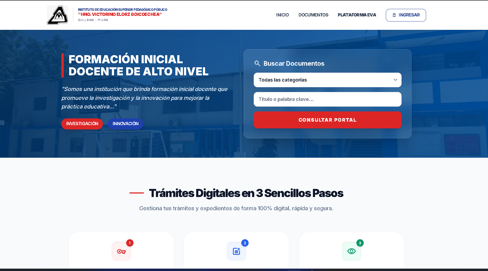
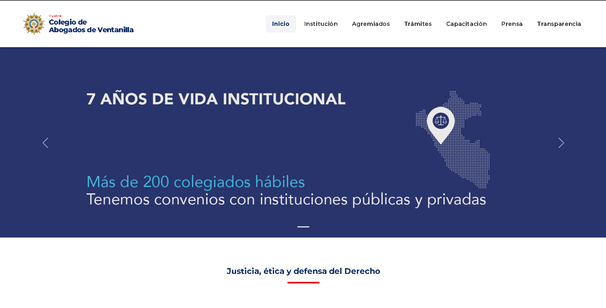

// 03 — Evidencias
Documentación Visual

Fig. 1 — Dashboard administrativo del Sistema de Gestión Académica (SIAE) implementado con Laravel 12 y Tailwind CSS.

Fig. 2 — Esquema y circuito del Sistema de Cerradura Electrónica con microcontrolador, teclado matricial y servomotor.